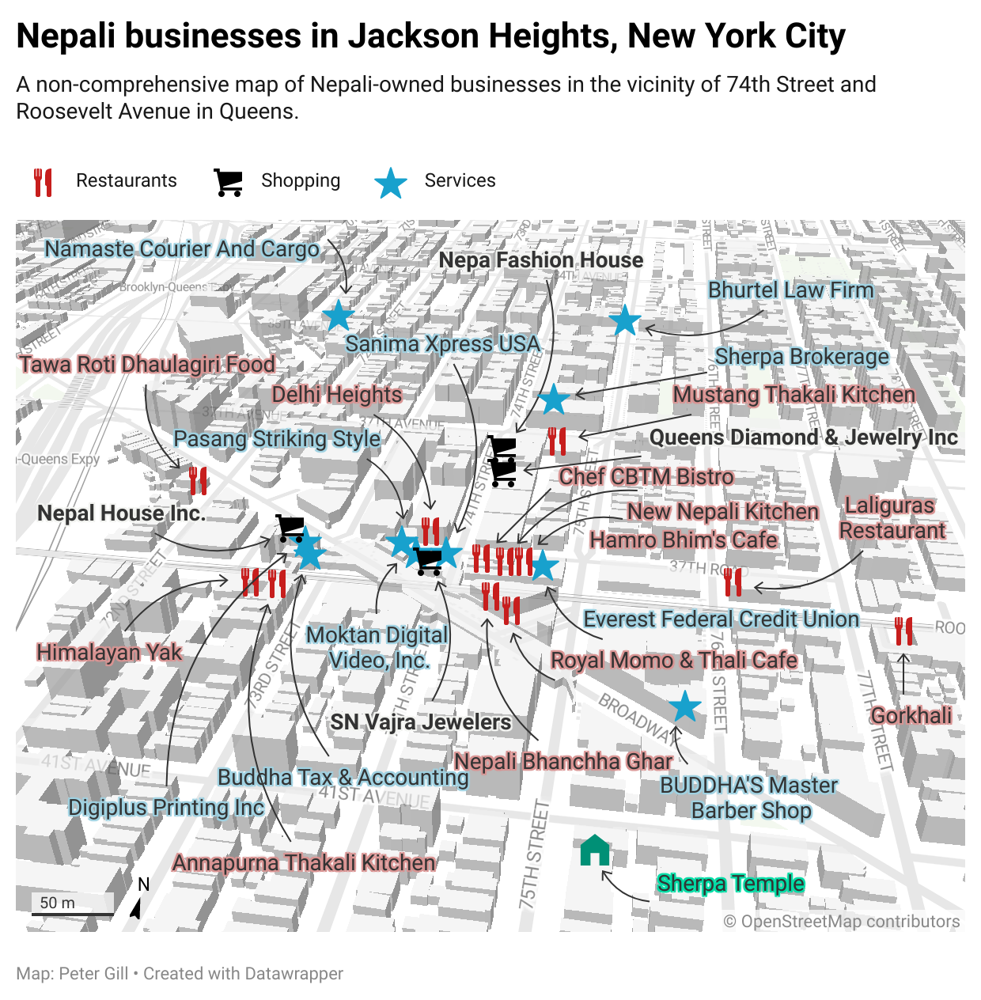

Hari Prasad Adhikari makaes his living as a Brahmin priest. He said that May and June are busy months for officiating at weddings, bartamans, and other ritual events.
Peter Gill, May 29, 2022
Jackson Heights in Queens, New York City is home to one of the largest concentrations of Nepali-owned businesses in North America. Over two-dozen Nepali restaurants, shops, law offices, accountants, and other businesses are located within a three-block radius of the 74th Street and Roosevelt Avenue intersection.
For Nepalis all over New York City, Jackson Heights serves as a hub for shopping, services, and eating.
In April 2022, Peter Gill and Shradha Ghale produced a podcast episode for the Queens Memory Project featuring a Nepali nanny and a Nepali barber in Jackson Heights. You can listen to the episode below at the end of this photo story.

Chef Chet Bahadur Thapa Magar and hiw wife, Anju, started their own restaurant in 2021 in Jackson Heights after working in other restaurants' kitchens for a decade.
The kitchen inside Chef CBTM Bistro.
Gyanu Thapa is the owner and proprietor of Gorkhali Restaurant on roosevelt Ave., Jackson Heights.
Mohan Chhetri takes a break before the evening rush at Delhi Heights restaurant.
Pradip Shrestha is the proprietor of Sanima Xpress USA, a money transfer business, as well as Travel Bureau of Nepal.
Chhong Gurung, originally from Manang District, is the proprietor of Nepal House, a business that sells ritual items and clothing from Nepal.
Prem Gopal Maharjan is proprietor of Vajra Jewelers in Jackson Heights.
Pasaang Striking Style is run by Passang Sherpa. During his free time, Sherpa writes poetry and lyrics for songs performed by Nepali pop artists, including "Sayaun Dada Katdai Aaye," which has garnered over one million views on YouTube.